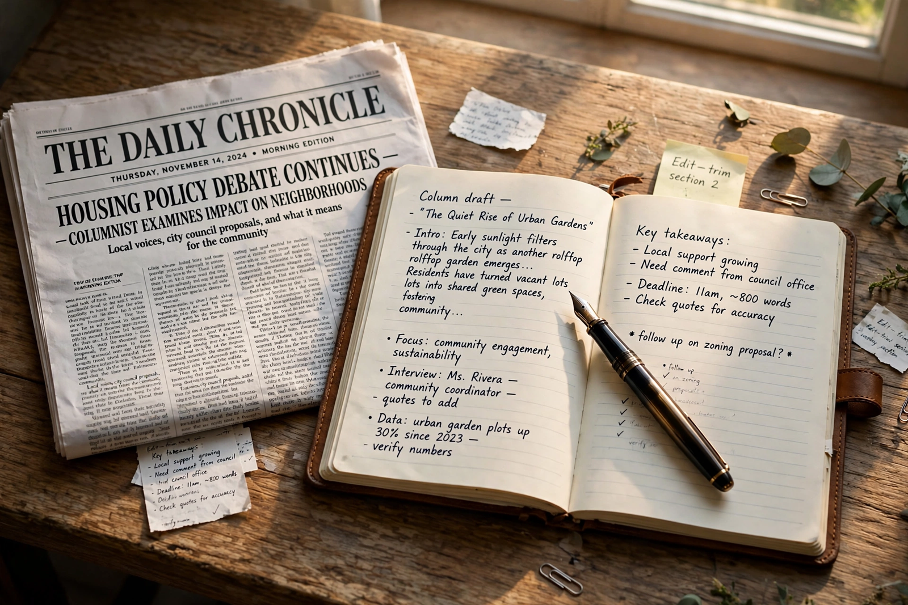

Leading Article
The Times view: rebuilding trust in public institutions
Competence, candour and consistency — the unglamorous virtues on which confidence in government ultimately depends.

Competence, candour and consistency — the unglamorous virtues on which confidence in government ultimately depends.
Shops are going, but cafés, clinics and flats are arriving. The town centre is not dying; it is changing its job.
We will happily watch a three-hour film or read a long novel. What we no longer tolerate is being made to wait for nothing.
Readers write on garden wildlife, the case for singing in schools, and a spirited defence of the Oxford comma.
Remembering a life spent designing the tunnels, bridges and transit systems millions use without a second thought.